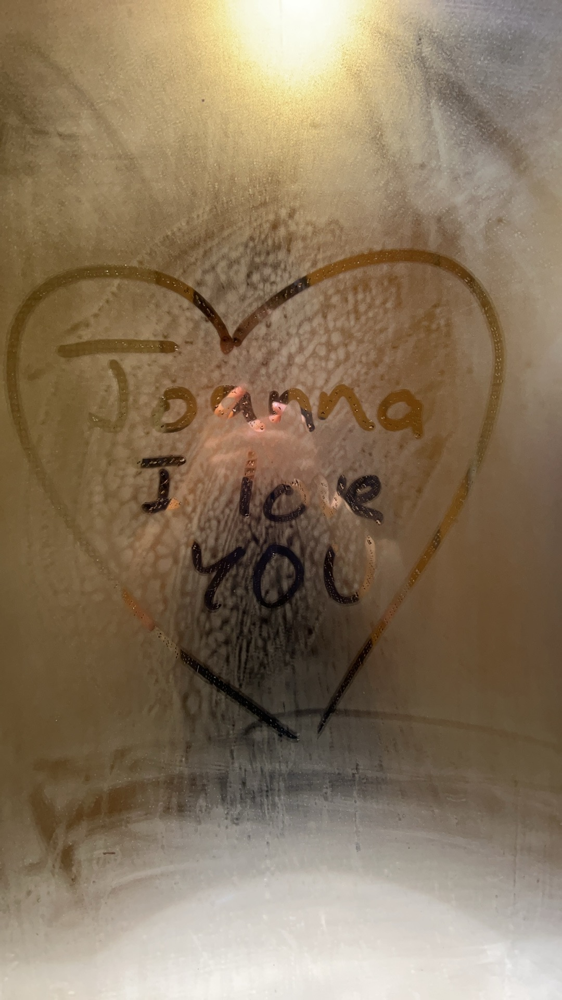

First Day We Met
It all began with a smile. I still remember how nervous I was...
The First Message
At this moment, I didn’t know that something so big was about to happen in my life.
Texting Phase

A cute moment from our early texting days — even the kitten had attitude. Hmph 🔫
Our First Meeting at the Library
This was the first time that I have ever met you in real life. Waiting in the end of the corridor for you to arrive during our long awaited lunch break, my heart was pumping fast, and my brain going back through everything to make sure that I was prepared to meet you. Seeing you in that brown dress made me even more nervous. You were so beautiful, more than any picture have captured before. Having you siting next to me was a blessing. I knew that something is about to change my life forever.
Pretty Dress ~

Slowly falling in love 💗
Little Unfunny Joke

I WILL NEVER FORGET YOU!!!
Late Night Call

Remember when we started calling at 3am until the morning that day?
Our First Date!

I still remember your beautiful black outfit on our very first date. From the Concordia Library to Yen to sitting close to you on the parc bench learning vectors, it is a day that I will never forget.
Pretty Pictures

You showed me many pretty pictures of you that day!
Our Second Date!

Right before the theatre show, we went on a small ramen date. I loved walking with you holding on to my arm.
We're Finally Dating!

This is the day you became my girlfriend. Little did I know how much change was going to happen in my life, what I will be going through and what I will experience with you~
Prom Night Beauty

You. Were. Absolutely. STUNNING. At. Prom.
Our Last Date Before Japan

That was I think our third date? It was a wonderful day with you my love. We also took some pictures together which is kind of really rare now that I think about it hahaha. Your beauty is engraved in my heart I love you.
Call From Japan

Cute screenshot from our video calls when I was in Japan~
Sweater Photoshoot

Baby even did a photoshoot with my sweater that day! You are amazing hehehe
Our Japan Date

After a whole month of texting till midnight, sharing tons of our daily lives while the other was asleep, fighting against distance and time difference, our love finally made it! I can't believe how we managed to pass this obstacle so well and fought so much for our relationship. Our Japan date was also one of the best days I've ever had with you! Exploring a new country with you somehow made me fall in love with you even more too :0 I hope that is our first and definitely not the last time!
Our First Cage Month!

Our first year of cage have started off well for us! Here's a little memory of us playing around with Widgetables. We even had our little baby sharkkk
Our First Big Fight

This is the first of our biggest fight. It was a night with not much sleep, but looking back every fight made us closer to each other. As we've have always said, we don't go to bed mad, and I hope that communication will always help us in our relationship. I know that sometimes I am not the best boyfriend that makes you the happiest, but I will always try my best to become who you have dreamt of, and give you the life you want. Remember that no matter what happens, I love you with all my heart
Little Text, Big Meaning
A text that means the world to me. You might think it's not much, or that it is kind of normal, but in reality, those little texts from you showing that you do and how much you love me really warms my heart.

My Favourite Perspective
Videocalling my gf has always been the happy and fun moments of our relationship! I love this cute baby angle that you always show me, I don't know why you think its ugly, but you look like a little cutie pie and how can I not love you so so muchhhh~

A Cute Heart for My Safety
Remember when I was at the airport video calling you a last time before leaving to Bahrain, my cute baby showed me this loving heart that I can't stop looking at <3

Week in Bahrain
I still feel sorry for that time when I couldn't manage to stay up waiting for you when you were so excited...I'm sorry for disappointing you, I have always wanted to make you happy and despite me not being the "best" bf sometimes, I will always try harder to become the person that you dream of.
Little *Dirty* Talks
Just look at how cute are those little cloud emojis! I wonder what kind of stuff I was saying to you hehehehe

The Twirlllll
No videos but you know exactly what video I am talking about and the countless times I have watched it on repeat, fascinated by your beauty~
MY Gorgeous Girl
I'm not quite sure when you did this photoshoot, but I remember you first showing it to me and I was blown away by your beauty. Eventually you agreed to send me this picture, and not going to lie this makes me " *censored* ". HEHHEHE I LOVE YOU YOU'RE SO PRETTY AHHHHHHHH
A Library Date at Octogone
Even though my Cal 1 exam didn't go so well, this picture is still a really really cute one that shows our love and I adore holding you in my arms I feel like I am holding the entire world

Liuyishou and Concordia date~
Another date with the love of my life. I was so full after eating at Liuyishou that we just went to rest at Concordia after hahaha. Such a pretty picture tho~ (we didn't use student discount for Liuyishou oops)

Another Cute Date
Another cute date but this time we didn't study as much oops. I do remember having my tired baby sleep in my arms that day I love you Joanna

Labubu Addiction Starts!
After our first exhausting exam session, we met up at Angrignon Mall for the first time on our Christmas date and I finally gave you a Labubu! Looks like you liked it a lot~ And that was the start of a huge incoming addiction :0